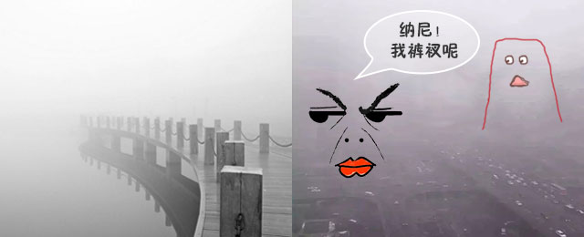

一般来讲，雾和霾的区别主要在于水分含量的大小：水分含量达到90％以上的叫雾，水分含量低于80％的叫霾。80％～90％之间的，是雾和霾的混合物，但主要成分是霾。
就能见度来区分：如果目标物的水平能见度降低到1千米以内，就是雾；水平能见度在1千米～10千米的，称为轻雾或霭；水平能见度小于10千米，且是灰尘颗粒造成的，就是霾或灰霾。另外，霾和雾还有一些肉眼看得见的“不一样”：雾的厚度只有几十米至200米，霾则有1千米～3千米；雾的颜色是乳白色、青白色，霾则是黄色、橙灰色；雾的边界很清晰，过了“雾区”可能就是晴空万里，但是霾则与周围环境边界不明显。
详情请戳：http://www.sangebaba.com/


点击二维码关注三个爸爸公众号